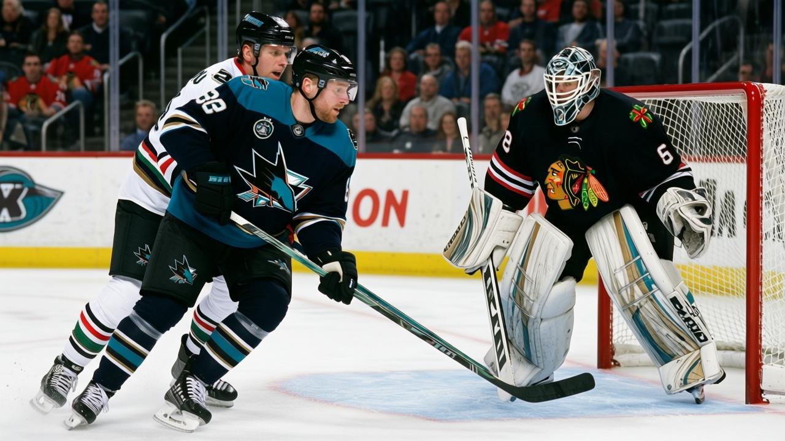

I Saw Him When: The 12th Pick Has a 94 and a Coach Who Said His Name
Roger Nylander carries the 2nd-highest potential in the 2004 first round. He has played 6 games. Ron Wilson went past the expected answers after a win in January.
 Pete LarocqueScouting editor · The Prospect File
Pete LarocqueScouting editor · The Prospect File
The 12th pick from last June has a potential figure of 94 on the League Scouting Bureau's Book. His overall reads 71. He's played 6 games in the league.
Roger Nylander73, a left winger with  San Jose Sharks, is 20 years old. He logged 9.7 minutes a night in those 6 appearances, scored 2 goals, collected 2 points, and is scratched tonight.
San Jose Sharks, is 20 years old. He logged 9.7 minutes a night in those 6 appearances, scored 2 goals, collected 2 points, and is scratched tonight.
Ron Wilson, after a 6-4 win over  Chicago Blackhawks on January 2, singled him out by name. "You watch Nylander, you watch the kid, and he's 20 years old and he doesn't look lost out there," Wilson told The Tunnel's Jan Kowalczyk. "He forechecks like he's got a habit of competing, not like he's trying to prove something to me or to you, he just plays that way. Two in six, that's encouraging."
Chicago Blackhawks on January 2, singled him out by name. "You watch Nylander, you watch the kid, and he's 20 years old and he doesn't look lost out there," Wilson told The Tunnel's Jan Kowalczyk. "He forechecks like he's got a habit of competing, not like he's trying to prove something to me or to you, he just plays that way. Two in six, that's encouraging."
Wilson, a head coach, used a post-game scrum to describe how the kid plays. He made it sound like Nylander already belonged in the lineup.
Where the 94 sits in the 2004 class
Only one first-rounder from last June carries a higher potential number: Andreas Stahle63, a defenseman at  Columbus Blue Jackets taken 19th overall with a potential of 96 and 0 games played. Everyone else in the 2004 first round sits at 92 or below.
Columbus Blue Jackets taken 19th overall with a potential of 96 and 0 games played. Everyone else in the 2004 first round sits at 92 or below.
| Pick | Player | Pos | Team | Overall | Potential | GP | Points | MPG |
|---|---|---|---|---|---|---|---|---|
| 19 | Stahle | D | CBJ | 67 | 96 | 0 | ||
| 12 | Nylander | LW | SJ | 71 | 94 | 6 | 2 | 9.7 |
| 4 | Sulku | LW | CGY | 69 | 92 | 28 | 5 | 7.5 |
| 1 | Spacek | C | TOR | 76 | 91 | 23 | 14 | 13.0 |
| 7 | Janota | G | CAR | 70 | 89 | 1 | 60.0 | |
| 14 | Prommersberger | RW | OTT | 68 | 85 | 0 | ||
| 21 | Zholtok | LW | EDM | 66 | 84 | 0 |
The players carrying high potential who are actually on the ice are producing. Mika Sulku69 at  Calgary Flames, the 4th pick, has a 92 potential and 28 games under his belt. Vaclav Spacek75 at
Calgary Flames, the 4th pick, has a 92 potential and 28 games under his belt. Vaclav Spacek75 at  Toronto Maple Leafs, the 1st pick, has a 91 and 14 points in 23 games at 13.0 minutes. The picks who dress every night tend to be the ones the Bureau never rated above 70: Tuomas Lydman74, 10th overall, potential 52, playing 18.0 minutes for
Toronto Maple Leafs, the 1st pick, has a 91 and 14 points in 23 games at 13.0 minutes. The picks who dress every night tend to be the ones the Bureau never rated above 70: Tuomas Lydman74, 10th overall, potential 52, playing 18.0 minutes for  Mighty Ducks of Anaheim; Craig Abid61, 28th, potential 73, 43 games for
Mighty Ducks of Anaheim; Craig Abid61, 28th, potential 73, 43 games for  New York Rangers.
New York Rangers.
The depth problem
Wilson, in the same scrum, said the Sharks have a core and then named the problem. "The honest part is we've got depth issues. You look at our third and fourth lines..." He let the sentence trail.
A 94 potential is the number that fixes the bottom six Wilson described.
Marcel Hossa76, the 16th pick from 2000, is the Sharks' highest-rated player under 25 on the Bureau's under-23 index. He is 23, carries a 76 overall with 85 potential, and has 29 points in 40 games at 16.1 minutes. He is the top of San Jose's young group, and the top is 76.
Nylander's potential is 94. The gap between those two numbers is what the development has to close, and 6 games in 9.7 minutes is not a sample that closes it.
Standing still
On the Bureau's Development Index, Nylander's form reads 0. He's flat. The 2004 draft class has produced one player who dresses and plays regular minutes for San Jose: Yury Salei66, the 29th pick, a defenseman, 13 games, 2 points, 17.7 minutes a night. Nylander has 6 games.
The Sharks sit at 40 points, 15-18-4, 6th in the Pacific, on a 1-game losing streak. Wilson's third and fourth lines are the holes he described publicly. The rotation has room to put a 20-year-old in them for stretches, even losing games.
The next 30 games decide whether the 94 starts converting or sits next to a 71 and a 0 for a second straight year.